Raíz · Manual de usuario
App móvil y backoffice · Ingeniería Para la Alimentación
Una guía para trabajar desde el comedor hasta el seguimiento del equipo de coordinación. Los recorridos siguen una misma tarea aunque empiece en el teléfono y termine en el panel web.
Cómo usar esta guía
- Completá el acceso y elegí el establecimiento con el que vas a trabajar.
- Seguí Talla y Peso para registrar personas y mediciones y consultar su evolución.
- Seguí Encuestas para preparar un relevamiento, responderlo y consultar los resultados.
- Seguí Nutrir para registrar alimentos, consultar existencias y trabajar con recetas.
| Capítulo | Qué vas a poder hacer |
|---|---|
| Acceso y trabajo en equipo | Crear una cuenta, conseguir acceso al comedor y administrar usuarios y establecimientos. |
| Talla y Peso | Registrar sujetos, cargar mediciones, sincronizar y consultar el seguimiento. |
| Encuestas | Crear, activar, responder, corregir y exportar relevamientos. |
| Nutrir | Registrar ingresos y egresos, revisar recibos, consultar stock e historial y usar recetas. |
En cada recorrido se indica quién actúa, dónde y qué resultado debe ver. Si una acción no aparece, primero comprobá el rol de tu cuenta y el establecimiento elegido.
Qué significa cada nombre
| Nombre | Significado en Raíz |
|---|---|
| Establecimiento o comedor | Lugar al que se vinculan las actividades y los movimientos de alimentos. |
| Sujeto | Persona registrada para realizar su seguimiento. |
| Relevador / Responsable de establecimiento | Persona que realiza las cargas desde la app. La pantalla móvil puede mostrar «Responsable de establecimiento». |
| Analista | Integrante del equipo que consulta y trabaja con relevamientos desde el backoffice. |
| Administrador | Persona que además gestiona cuentas, solicitudes y datos de establecimientos. |
| Sincronizar | Enviar al sistema los registros guardados en el teléfono. Guardar en el teléfono y completar la sincronización son momentos distintos. |
| Perfil del establecimiento | Ficha sobre su funcionamiento, las personas que asisten, la alimentación y la comunidad. No es el perfil personal de quien usa la app. |
Una tarea, dos plataformas
| Etapa | En la app | En el backoffice |
|---|---|---|
| Preparar el trabajo | Registrarse y solicitar acceso al comedor. | Revisar la cuenta y las solicitudes de acceso. |
| Talla y Peso | Crear o buscar al sujeto y guardar la medición. | Consultar sujetos, mediciones, evolución y estado del comedor. |
| Encuestas | Elegir la encuesta activa, responder y sincronizar. | Diseñar y activar la encuesta; consultar y exportar respuestas. |
| Nutrir | Registrar alimentos, consultar stock y trabajar con recetas. | Consultar stock y movimientos; registrar movimientos desde la ficha del comedor. |
1. Acceso y trabajo en equipo
1.1 Elegir dónde trabajar
El relevador usa la app móvil. Los administradores y analistas pueden entrar al backoffice. El panel web avisa a los relevadores que deben ingresar desde la app.
En la app, Inicio, Historial y Perfil están en la barra inferior. Inicio reúne los accesos a Medición, Sujeto, Encuesta, Alimentos y Recetas. En el backoffice, el menú lateral reúne las secciones disponibles para tu rol.
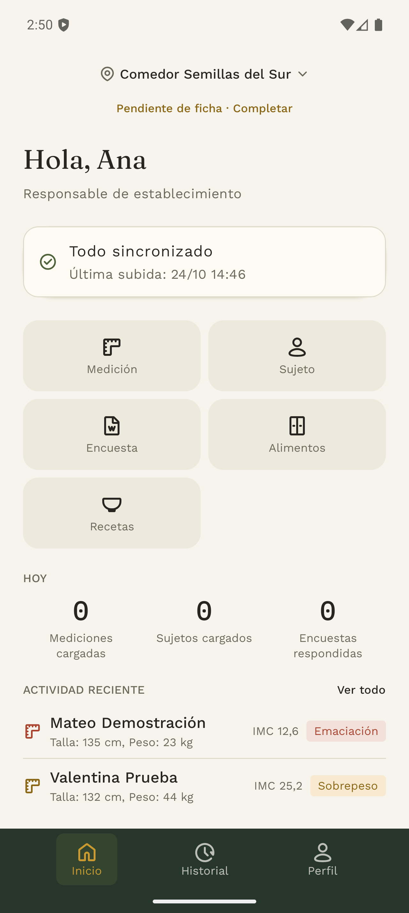
1.2 Registrarse como relevador
Quién: quien va a cargar datos en el comedor. Dónde: app.
- En la bienvenida, tocá Crear cuenta.
- Completá email, contraseña, nombre y apellido.
- Si ya sabés dónde vas a trabajar, seleccioná uno o más establecimientos. Este paso es opcional.
- Si corresponde, agregá localidad, descripción y teléfono de contacto.
- Tocá Crear cuenta y revisá el aviso de registro enviado.
- Abrí el correo de verificación y confirmá tu email.
- Esperá la aprobación de la cuenta por un administrador antes de iniciar sesión.
La verificación del email y la aprobación de la cuenta son pasos diferentes. Una cuenta creada todavía puede estar pendiente de aprobación. Seleccionar un comedor durante el registro tampoco significa que el acceso haya sido aprobado.
Si el correo ya está registrado, usá Iniciar sesión o la recuperación de contraseña. Si alguno de los establecimientos ya no está disponible, revisá la selección y volvé a enviar el formulario.
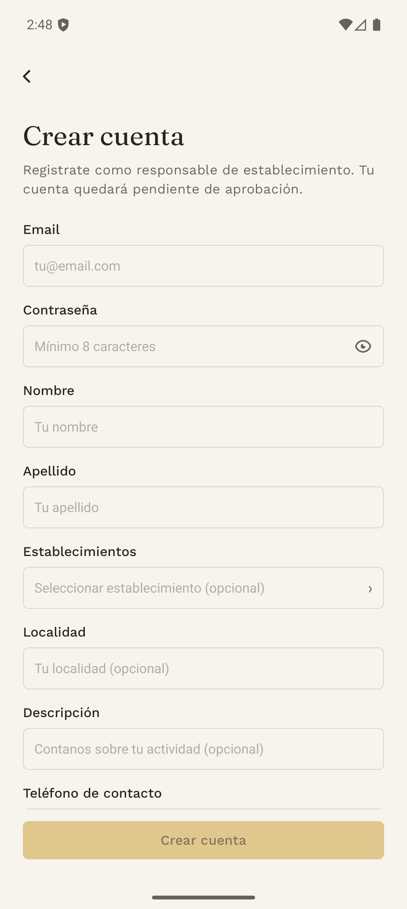
1.3 Aprobar una cuenta y decidir sus accesos
Quién: administrador. Dónde: backoffice → Solicitudes → Registros de usuarios.
- Buscá el registro pendiente y elegí Revisar.
- Comprobá los datos y el aviso de email sin verificar, si aparece.
- Decidí qué establecimientos aceptar, cuáles rechazar y cuáles dejar pendientes.
- Elegí Aceptar solicitud y confirmá para activar la cuenta con las decisiones tomadas.
- Para rechazar el registro completo, elegí Rechazar solicitud y confirmá.
Los accesos que dejás sin decidir siguen pendientes. Se resuelven después en Accesos a establecimientos. Si se informa una aprobación parcial, revisá esa pestaña antes de dar por terminada la tarea.
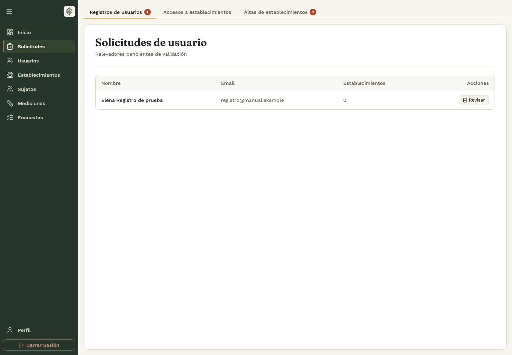
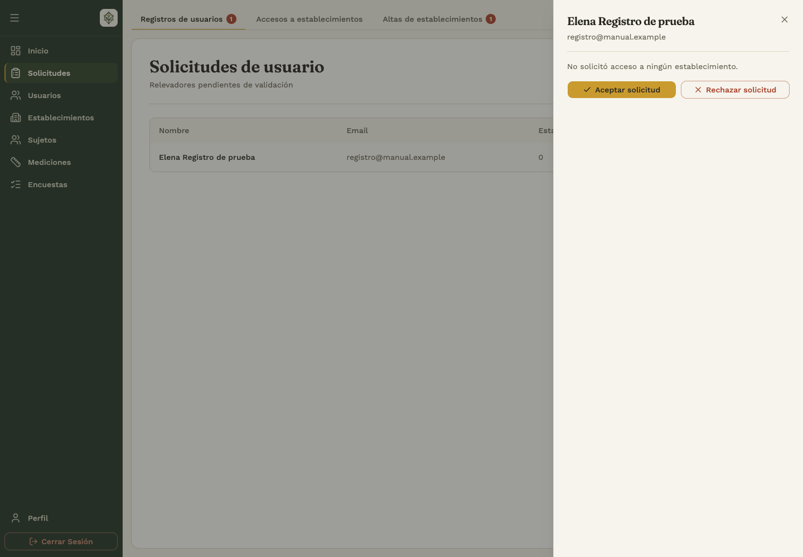
1.4 Iniciar sesión y recuperar la contraseña
Dónde: app → Iniciar sesión, o página de acceso del backoffice.
- Ingresá el email y la contraseña de tu cuenta.
- Elegí Iniciar sesión.
- Si la cuenta está pendiente, solicitá al administrador que revise tu registro.
- Si olvidaste la contraseña, elegí ¿Olvidaste tu contraseña?, ingresá el email y seguí el enlace del correo.
- Definí la nueva contraseña y volvé a iniciar sesión.
En el formulario web, los requisitos de contraseña se muestran junto al campo. Si un enlace venció o ya se usó, solicitá uno nuevo. Si el sistema pide esperar tras varios intentos, respetá el plazo indicado antes de reintentar.
Si la sesión vence durante el trabajo, iniciá sesión nuevamente. No vuelvas a cargar un registro sin revisar primero su estado en Historial.
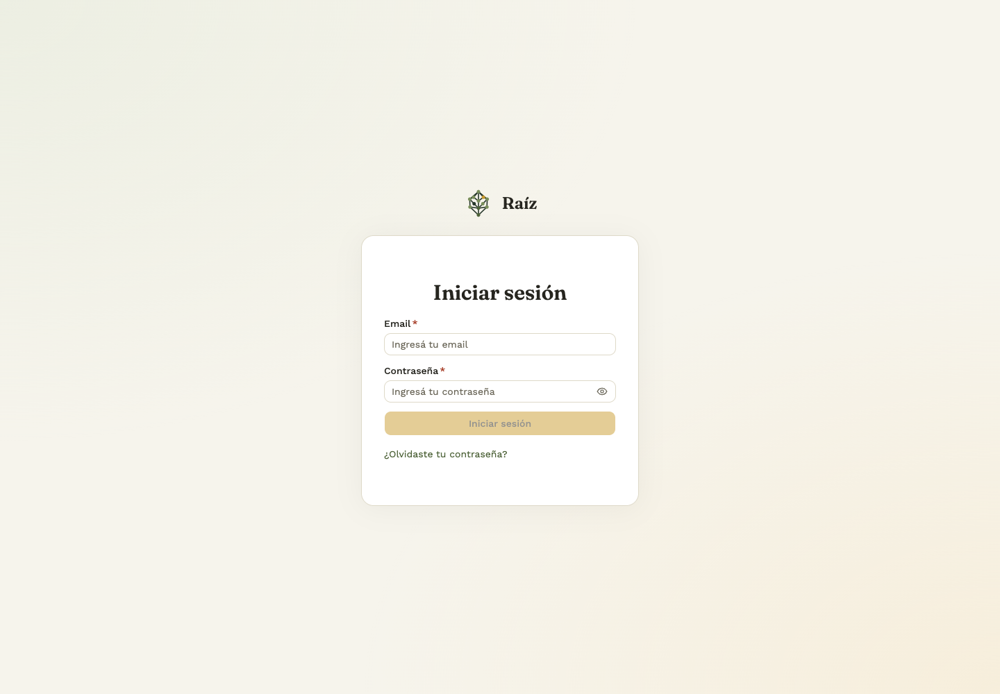
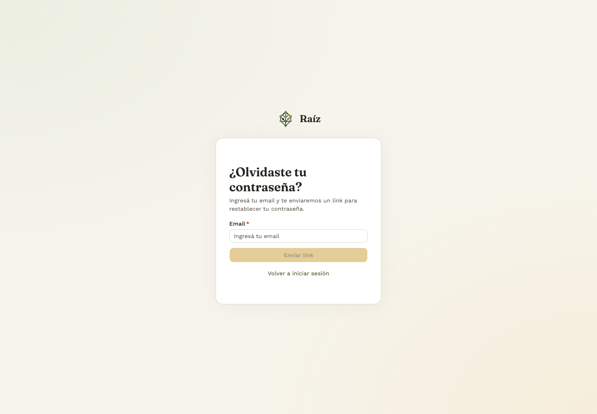
1.5 Solicitar acceso a otro establecimiento
Quién: relevador o analista. Dónde: app → Perfil → Mis establecimientos, o backoffice → Perfil → Mis establecimientos.
- Elegí Solicitar acceso y buscá el comedor por su nombre o dirección.
- Seleccionalo y enviá la solicitud.
- Revisá el estado Pendiente, Aprobado o Rechazado.
- Cuando el administrador lo apruebe, volvé a Inicio y elegí ese establecimiento.
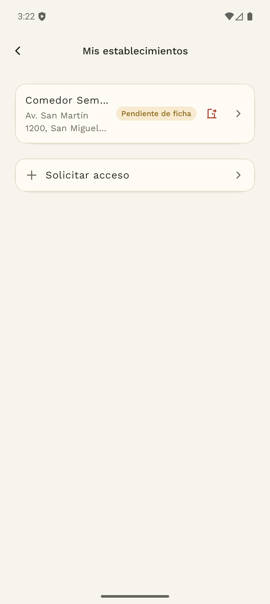
El administrador decide el acceso desde Solicitudes → Accesos a establecimientos → Revisar. Puede aceptar o rechazar cada vínculo y aplicar los cambios. La aprobación de la cuenta y la de cada comedor se administran por separado.
Para dejar de trabajar en un comedor, usá la acción de retiro o baja de Mis establecimientos y confirmá. Un administrador puede quitar el acceso desde la ficha del usuario o la pestaña Relevadores del comedor. Si te revocaron el acceso, solicitá su revisión antes de continuar.
Los administradores usan Suscribirme / Desuscribirme en lugar de solicitar una aprobación. La suscripción identifica sus establecimientos de interés.
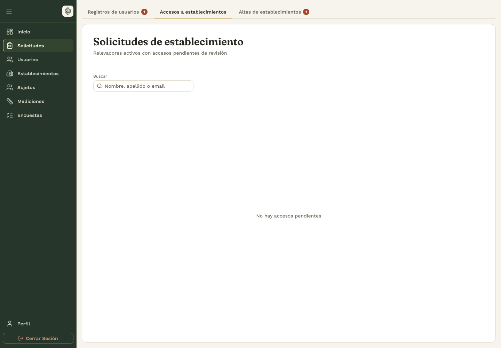
1.6 Notificar un comedor que no aparece
Dónde: app → Perfil → Mis establecimientos → Solicitar acceso → ¿No encontrás tu comedor? Notificar.
- Completá el nombre y la dirección; agregá ciudad y provincia si las conocés.
- Tocá Siguiente para completar la ficha del comedor, o dejala para después con Contestar luego.
- Enviá la solicitud.
- Un administrador la revisa en Solicitudes → Altas de establecimientos del backoffice.
- Al aprobarla, el administrador completa o corrige la ubicación y los datos solicitados. El comedor queda disponible y se otorga el acceso correspondiente a quien lo propuso.
Si el lugar ya existe, el sistema puede reutilizarlo para evitar un duplicado. El rechazo de una propuesta no crea el establecimiento. Una solicitud ya resuelta no se vuelve a aprobar: revisá su estado antes de reintentar.
Un analista también puede usar Establecimientos → Proponer establecimiento en el panel web.
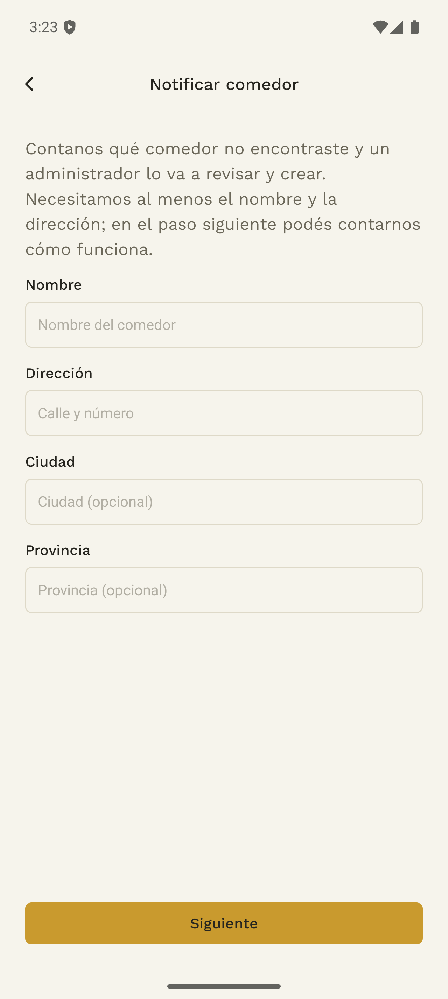
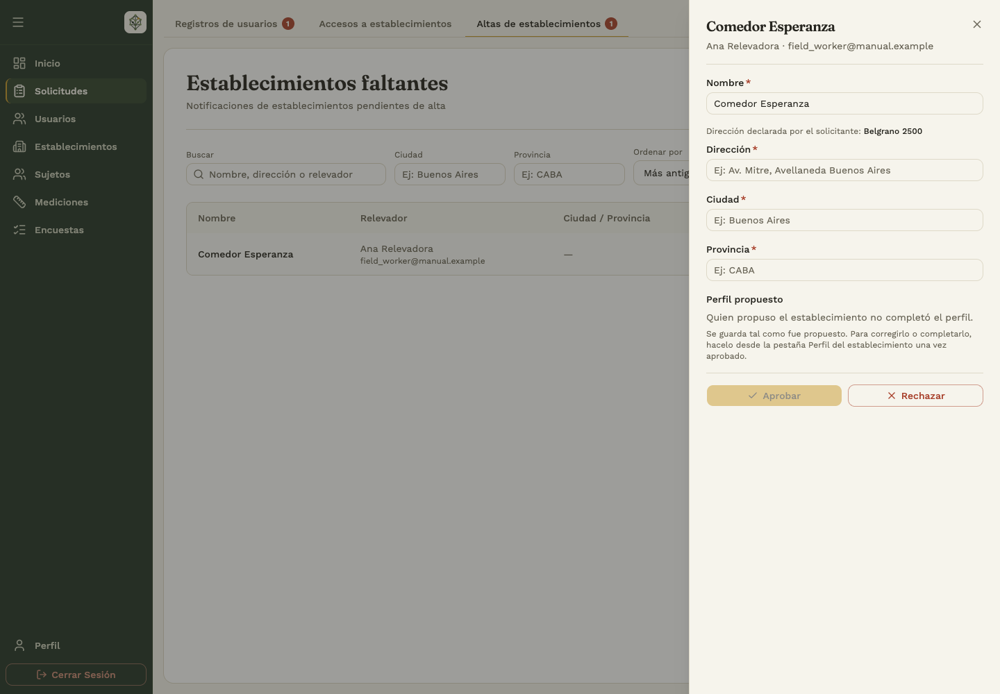
1.7 Elegir el comedor antes de cargar
En Inicio de la app, tocá el nombre del establecimiento o Elegí el establecimiento. Seleccioná el lugar en el que estás trabajando y verificá el nombre antes de registrar mediciones o alimentos.
Cambiar el comedor cambia el contexto de las nuevas tareas. No mueve los registros que ya se guardaron en otro establecimiento. Si un formulario muestra su propio selector, comprobá también ese campo.
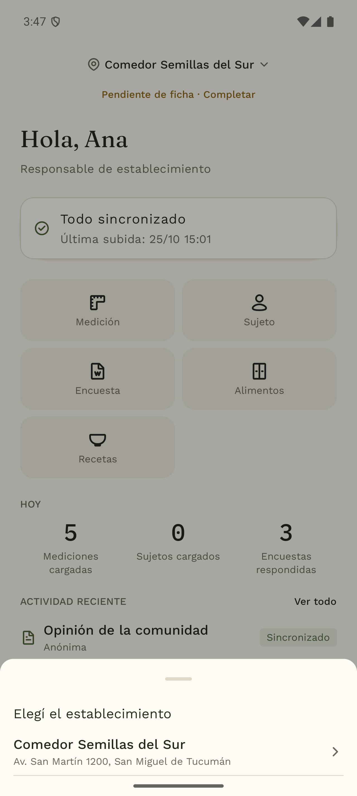
1.8 Crear, localizar y completar un establecimiento
Quién: administrador para el alta y la edición de nombre/dirección. Dónde: backoffice → Establecimientos.
- Elegí Nuevo establecimiento.
- Completá el nombre y buscá la dirección.
- Seleccioná una sugerencia de dirección para fijar la ubicación y verificá ciudad y provincia.
- Completá la ficha opcional si ya contás con esa información y guardá.
- Buscá el nuevo registro en la lista y abrilo para revisar sus datos.
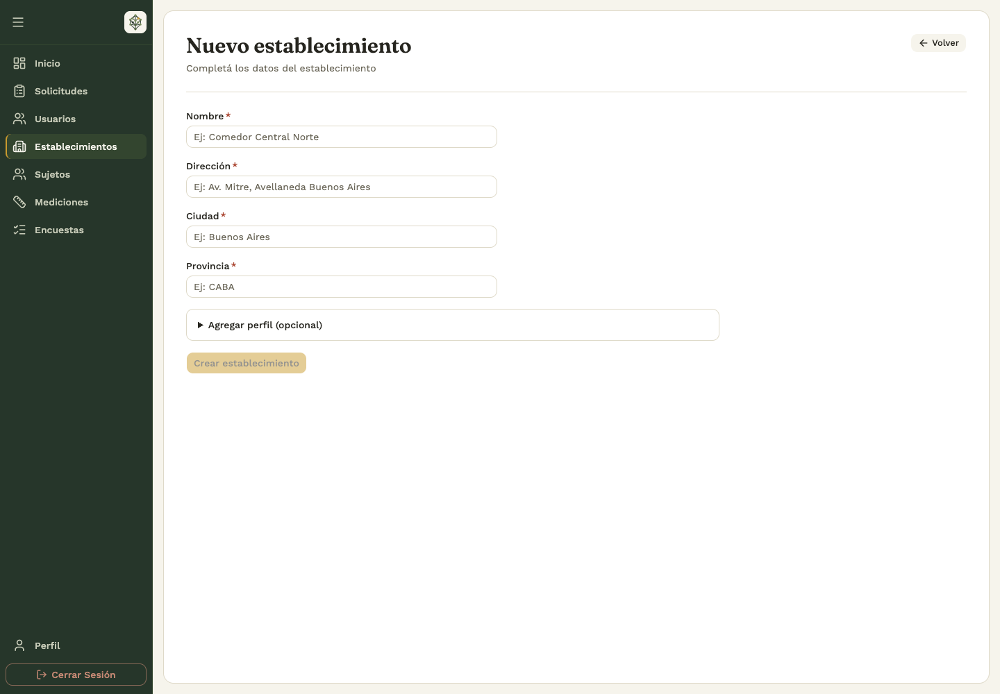
La lista permite buscar y ordenar. La vista Mapa muestra los establecimientos con ubicación disponible y una leyenda de estados. Si un lugar no aparece en el mapa, revisá la lista y su ubicación.
Desde la ficha, Editar datos permite corregir nombre y ubicación. La pestaña Perfil permite ver o completar la caracterización: ubicación y contacto, tipo de espacio, servicios, asistentes, alimentación y comunidad.
En la app, el responsable con acceso aprobado puede abrir la ficha desde Mis establecimientos o el aviso Pendiente de ficha · Completar. Los campos son opcionales: completá lo que conozcas y guardá. «Perfil completo» indica que la ficha tiene información; revisá el contenido antes de asumir que todos sus campos fueron respondidos.
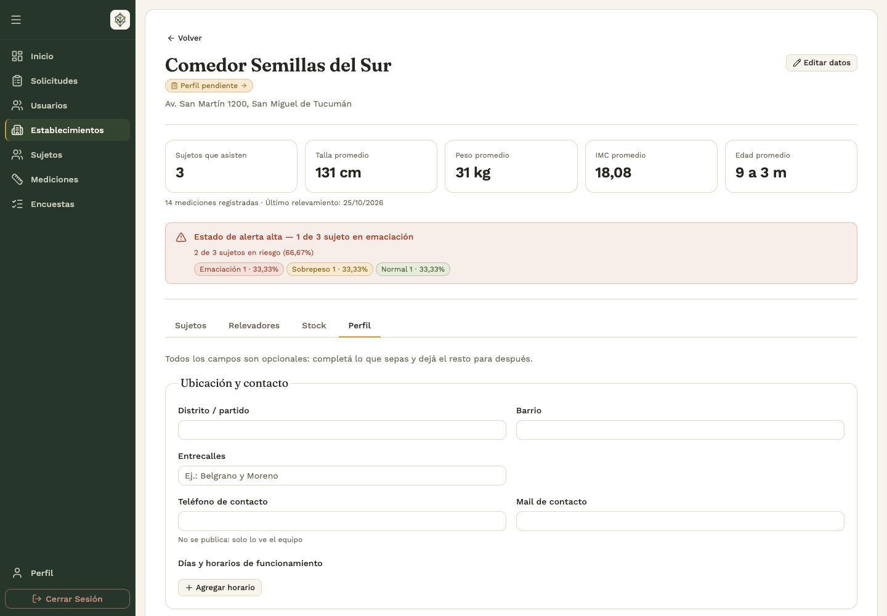
1.9 Invitar usuarios y administrar roles
Quién: administrador. Dónde: backoffice → Usuarios.
- Abrí la lista de Administradores o Analistas y elegí la acción de invitación.
- Ingresá el email y enviá la invitación.
- La persona abre el enlace, completa sus datos y crea su contraseña para activar la cuenta.
- Si no la recibió, usá Reenviar invitación cuando la pantalla lo permita.
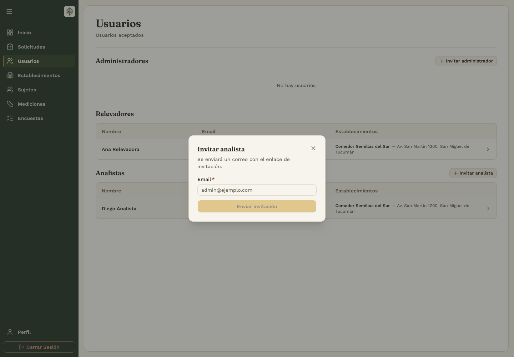
Si el email ya tiene una cuenta, el panel informa esa situación. Una invitación pendiente no equivale a una cuenta activada.
Abrí un usuario para ver su perfil, estado y establecimientos. Cambiar rol ofrece únicamente los roles que tu cuenta puede asignar. Un administrador no puede cambiar el rol de otro administrador ni del superadministrador; el superadministrador dispone de permisos adicionales. No podés cambiar tu propio rol desde ese diálogo.
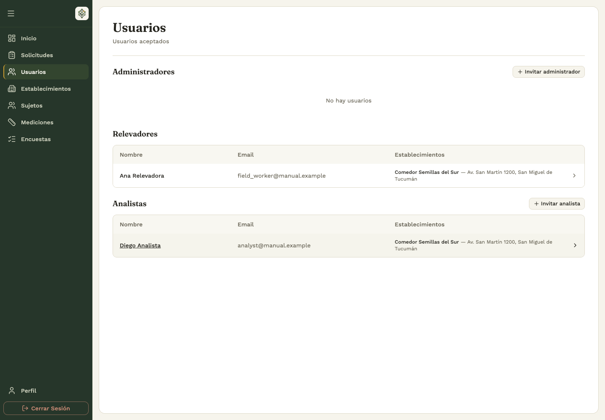
1.10 Editar el perfil y cerrar sesión
En Perfil → Editar perfil, modificá los datos que el formulario habilita y guardá. El email y el rol son datos de consulta en la edición del perfil personal.
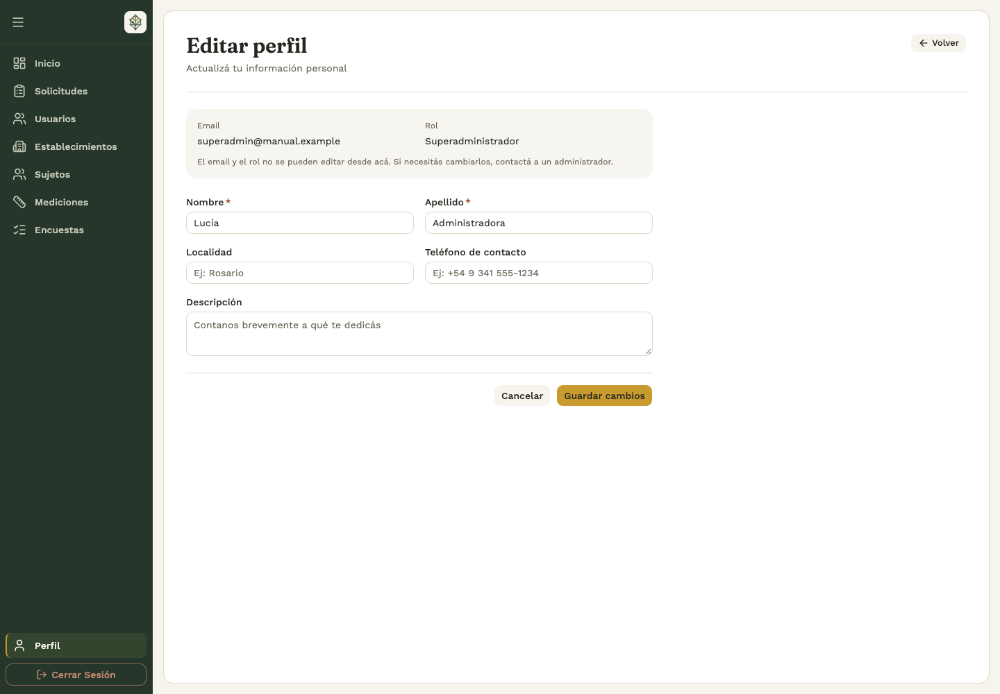
Para salir, elegí Cerrar sesión y confirmá cuando la app lo solicite. Antes de cambiar de cuenta o dispositivo, comprobá en Inicio e Historial que tus cargas estén sincronizadas. La copia pendiente en un teléfono no reemplaza el registro disponible para el resto del equipo.
En esta versión, cerrar sesión voluntariamente borra los datos locales de la app, incluidas las cargas que todavía no se sincronizaron. Esperá a que terminen de subir antes de confirmar la salida. Un vencimiento de sesión es distinto: volvé a ingresar y revisá las cargas pendientes.
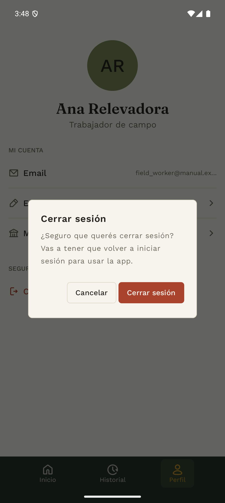
2. Talla y Peso
Recorrido completo
Relevador, app: elegir comedor → buscar o crear sujeto → cargar y revisar medidas → guardar → sincronizar.
Analista o administrador, backoffice: localizar la medición → consultar el sujeto y su evolución → revisar el estado del establecimiento → exportar si hace falta.
2.1 Registrar un sujeto
Antes de empezar: tené a mano los datos de la persona y buscala primero para evitar registrar dos veces a la misma persona.
- En Inicio, tocá Sujeto. También podés elegir Crear sujeto nuevo al buscar a alguien desde una medición.
- Ingresá el DNI sin puntos, Nombre, Apellido y Fecha de nacimiento en formato día/mes/año.
- Elegí Sexo y completá las opciones Población rural y Población indígena según corresponda.
- Tocá Guardar y verificá el aviso de guardado.
- Si llegaste desde la selección de una medición, continuá con el sujeto recién creado.
La fecha de nacimiento no puede ser futura. Revisá los mensajes debajo de cada campo si el formulario no permite guardar. Si ya existe una persona con ese DNI, revisá el registro existente antes de crear otra.
Si una carga local se reconcilia con una persona que ya estaba registrada, Historial muestra Ya existía. Revisá el resultado antes de repetir el alta.
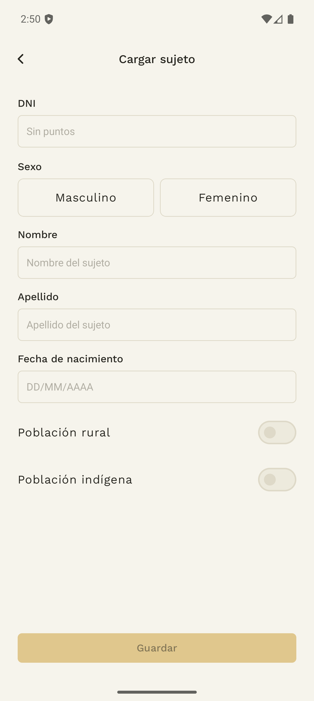
2.2 Buscar al sujeto y preparar la medición
Dónde: app → Inicio → Medición.
- Tocá Seleccionar sujeto.
- Buscá por nombre o DNI y elegí la persona correcta.
- Confirmá el nombre y el DNI que aparecen en el encabezado del formulario.
- Si elegiste otra persona por error, tocá Cambiar.
- Revisá el establecimiento de la medición. Debe ser el lugar al que corresponde esta carga.
La búsqueda de sujetos existentes consulta al servidor. En esta versión, haber abierto el listado antes no garantiza poder volver a buscar sin conexión. Seleccioná al sujeto con conexión antes de continuar la medición, o usá la creación de un sujeto desde el formulario cuando corresponda. Si aparece No se pudieron cargar los sujetos, recuperá conexión y tocá Reintentar.
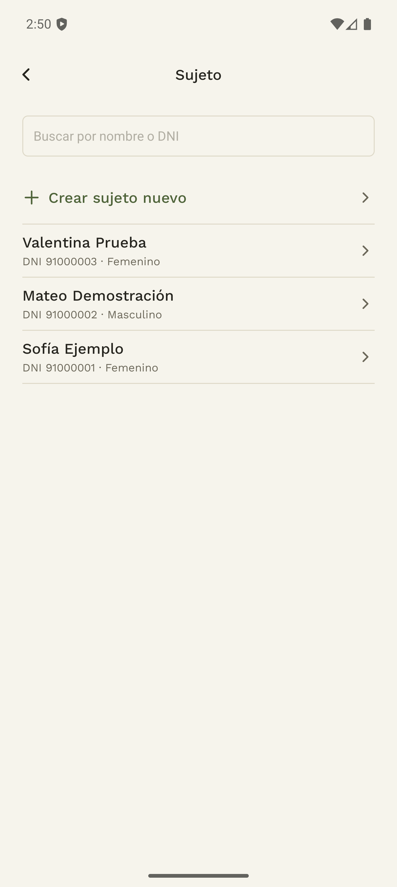
2.3 Cargar peso, talla y observaciones
- Completá Peso (kg) y Talla (cm). No ingreses la talla en metros.
- Si hace falta, agregá una Observación (opcional) de hasta 500 caracteres.
- Revisá la Fecha de medición que muestra el formulario. La app asigna el momento de la carga; ese campo no es un selector de fecha retroactiva.
- Tocá Guardar.
- Comprobá Medición guardada y después el estado de sincronización.
El formulario controla campos vacíos y valores fuera del rango permitido. Corregí el valor señalado y volvé a guardar. Si falla el guardado local, conservá los datos del formulario para reintentar.
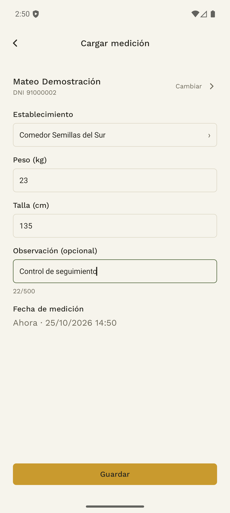
2.4 Revisar una medición que genera una alerta
Si los valores ingresados generarían una alerta, la app muestra Revisá las medidas antes de guardarlos.
- Compará el peso y la talla del diálogo con los valores que pretendías ingresar.
- Elegí Corregir si hay un error. Los datos permanecen en el formulario.
- Si los valores son los que querés registrar, elegí Confirmar y guardar.
- Revisá el aviso de guardado y su sincronización.
Cerrar el diálogo o volver atrás no confirma la carga. Cambiar el sujeto, el comedor o las medidas obliga a revisar la nueva combinación antes de confirmar. Las medidas que no requieren esa revisión se guardan directamente.
La alerta mostrada en esta instancia se calcula con los datos conocidos por la app. El resultado del registro sincronizado es el que podrá consultar el equipo en el sistema.
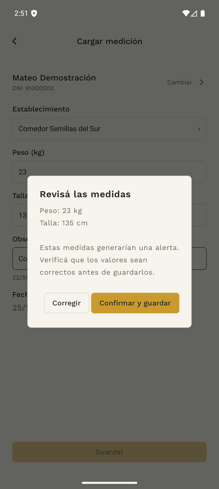
2.5 Cargar sin conexión y comprobar la subida
La app permite guardar sujetos y mediciones en el dispositivo y subirlos al recuperar conexión. No hace falta repetir la carga por el solo hecho de estar sin internet.
| Aviso de Inicio | Qué hacer |
|---|---|
| Todo sincronizado | Las colas no muestran cargas pendientes. Consultá Historial si necesitás comprobar un registro concreto. |
| Sin conexión y registros que «se subirán al reconectar» | Conservá el dispositivo y recuperá conectividad para subirlos. |
| Sin subir / Sincronizar | Tocá Sincronizar y esperá el resultado. |
| Sincronizando… | Esperá a que termine antes de dar por finalizado el trabajo. |
| Con error | Abrí Historial, revisá la causa y usá la acción de reintento disponible. |
En Historial, seleccioná el tipo de carga y revisá sus estados. Una persona creada sin conexión debe sincronizarse antes que sus mediciones asociadas; la app coordina esa secuencia.
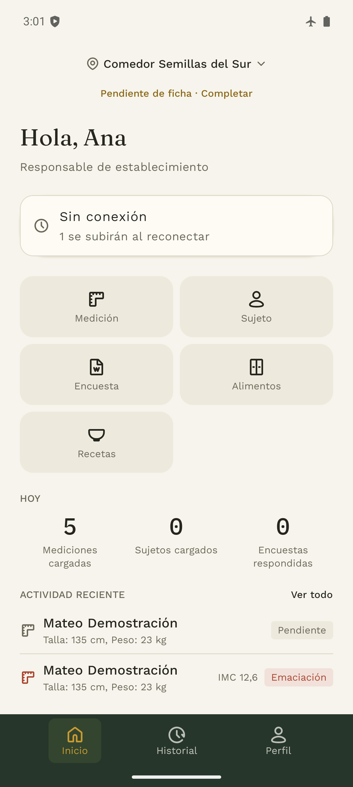
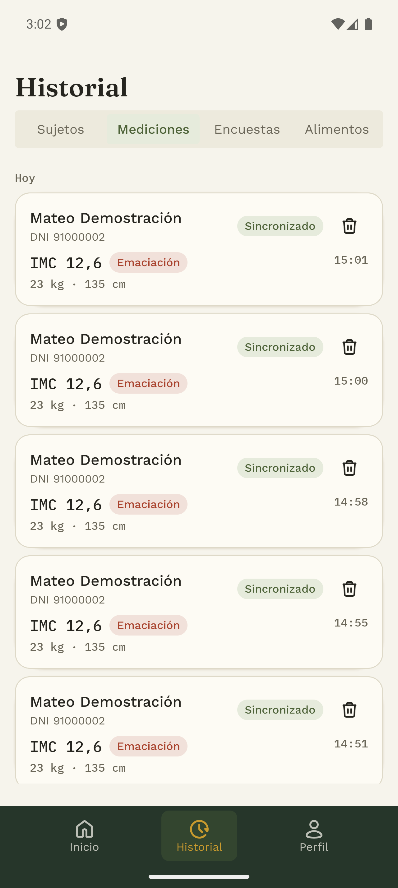
No borres datos de la aplicación ni la reinstales para resolver una carga pendiente. Si el error persiste, comunicá al equipo qué registro y qué mensaje aparecen.
La acción Eliminar de un historial local requiere especial cuidado: quitar una carga del teléfono no es un procedimiento para borrar una medición ya registrada en el sistema. No elimines una carga pendiente que todavía necesitás enviar.
2.6 Consultar sujetos desde el backoffice
Quién: analista o administrador. Dónde: Sujetos.
- Buscá por nombre, apellido o documento.
- Abrí Filtros para acotar por fecha de nacimiento, establecimiento, zona rural, población indígena o sexo.
- Ordená el listado y cambiá de página si hace falta.
- Abrí la fila de una persona para ver sus datos y el último relevamiento.
En el listado general, el último relevamiento puede pertenecer a cualquiera de los comedores. En la ficha de un establecimiento, la lectura de sus sujetos se refiere al último relevamiento en ese comedor. Comprobá el contexto antes de comparar las dos pantallas.
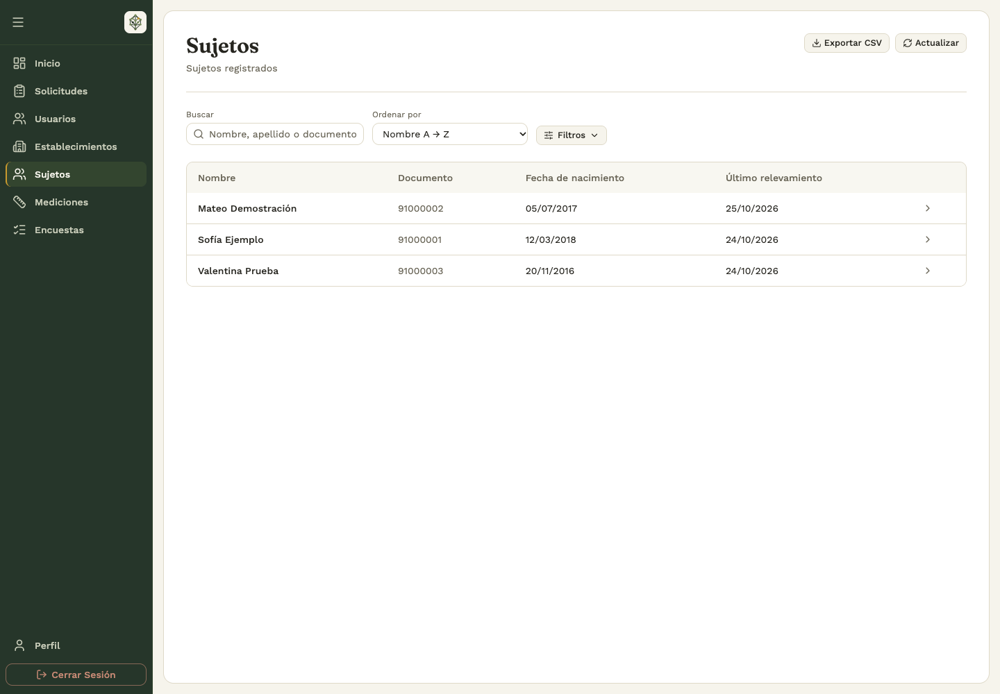
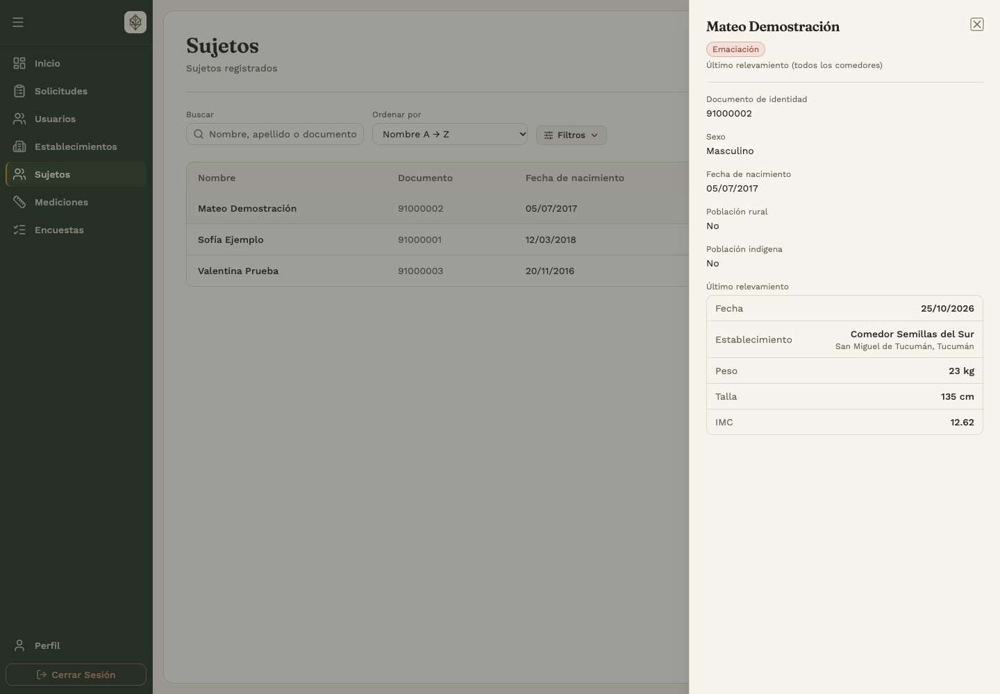
2.7 Consultar mediciones y evolución
Dónde: backoffice → Mediciones.
- Revisá peso, talla, IMC, fecha, sujeto, comedor, responsable, alertas y observaciones.
- Usá los filtros de fechas, edades y ubicación que muestra la pantalla para acotar la búsqueda.
- Elegí el orden que te resulte útil y tocá Actualizar para consultar las últimas cargas.
- Abrí una fila para ver la Evolución de esa persona, con el gráfico de peso y talla y las observaciones disponibles.
Si una carga de la app no aparece, revisá primero que esté sincronizada y después comprobá filtros, fechas y establecimiento. Un rango con la fecha inicial posterior a la final, o la edad mínima mayor que la máxima, debe corregirse antes de consultar.
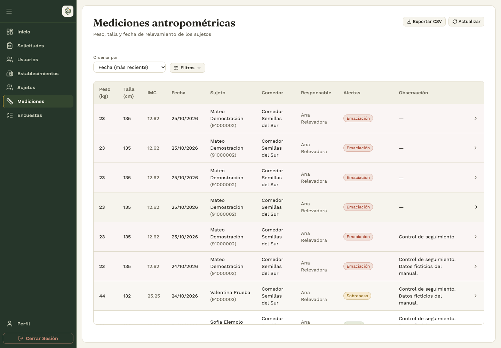
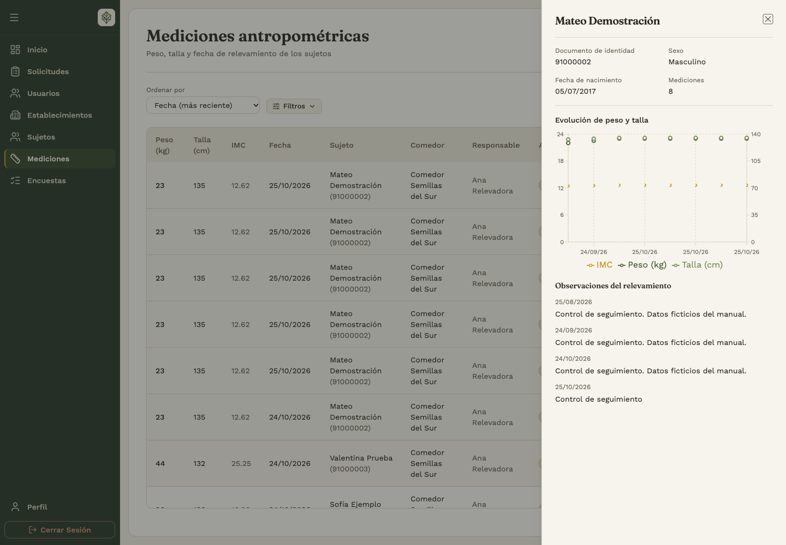
2.8 Revisar el establecimiento y exportar
En Establecimientos, abrí el comedor. La cabecera resume sus sujetos, promedios, último relevamiento y estado de alerta. La pestaña Sujetos permite revisar los registros que componen ese contexto.
Sin datos significa que todavía no hay información suficiente para mostrar esa lectura; no equivale a un resultado «Normal».
Las acciones Exportar CSV de establecimientos, sujetos y mediciones descargan el listado correspondiente. Configurá primero los filtros y comprobá el archivo descargado. La exportación sirve para continuar el trabajo fuera del panel; la consulta del sistema sigue mostrando las actualizaciones posteriores.
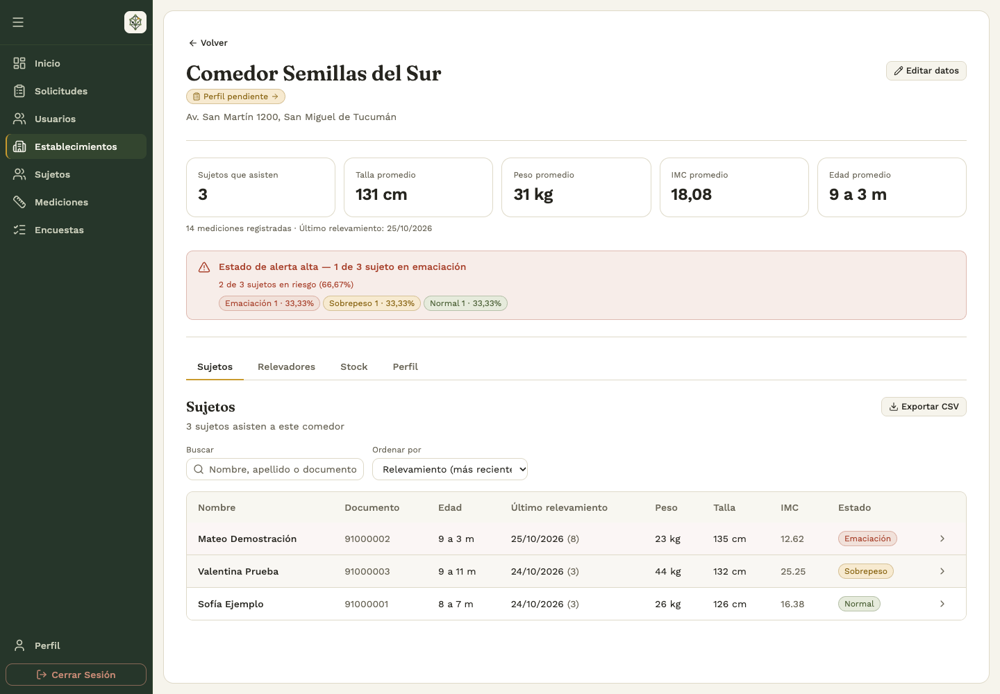
3. Encuestas
Recorrido completo
Backoffice: diseñar o partir de FIES → guardar → activar. App: elegir la encuesta → identificar el destinatario → responder → guardar y sincronizar. Backoffice: consultar respuestas e indicadores → filtrar → exportar.
3.1 Crear una encuesta personalizada
Quién: administrador o analista. Dónde: backoffice → Encuestas → Crear encuesta.
- Completá Nombre y, si corresponde, Descripción.
- Elegí el Destino de las respuestas:
- Sujeto: cada respuesta se vincula a una persona registrada.
- Establecimiento: cada respuesta corresponde a un comedor.
- Anónima: no se asocia a una persona ni a un establecimiento.
- Decidí si vas a Requerir número de respuesta. Aunque sea opcional, la app conserva el campo.
- Escribí cada pregunta y elegí su tipo: Texto libre, Selección única, Selección múltiple, Numérica o Fecha.
- Marcá Obligatoria cuando corresponda. Para preguntas de selección, agregá las opciones necesarias.
- Usá Agregar pregunta para completar el formulario y tocá Guardar.
La encuesta admite hasta 30 preguntas. El nombre debe distinguirla de las existentes. Una pregunta de selección necesita opciones; una pregunta de texto, número o fecha no usa una lista de opciones.
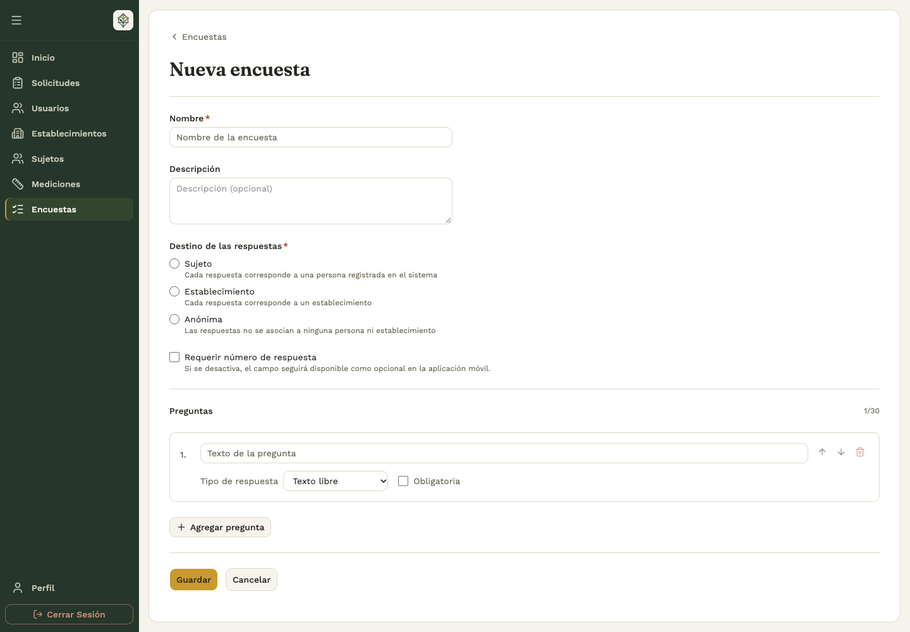
3.2 Partir de la plantilla FIES
Desde la creación de encuestas, elegí la opción de plantilla FIES que ofrece el panel. Revisá las preguntas precargadas, completá el nombre del relevamiento y guardá.
FIES es un instrumento específico: si necesitás conservar su evaluación, mantené la estructura y las respuestas previstas por la plantilla. Para otro cuestionario, usá una encuesta personalizada. El Score FIES se consulta cuando corresponde a las respuestas de ese instrumento; no es una puntuación genérica para cualquier encuesta.
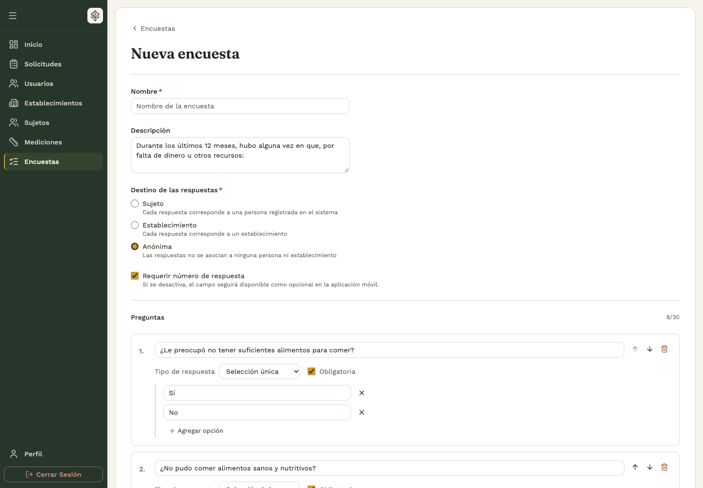
3.3 Activar, desactivar, duplicar y eliminar
Dónde: backoffice → Encuestas → Más acciones de la fila correspondiente.
Los administradores pueden modificar cualquier encuesta. Un analista puede modificar las que creó; para cambiar una de otra persona debe coordinar con su autor o con un administrador. La eliminación desde el backoffice está reservada a administradores.
| Acción | Resultado y precaución |
|---|---|
| Activar | La encuesta queda habilitada para recibir respuestas. Confirmá la acción. |
| Desactivar | Deja de aceptar nuevas respuestas; sus resultados anteriores siguen siendo consultables. |
| Duplicar | Crea otra encuesta para preparar un nuevo relevamiento. Revisá el nombre, contenido y estado de la copia. |
| Editar | Abre su configuración. Con respuestas registradas se aplican restricciones. |
| Eliminar | Disponible según permisos y condiciones. Una encuesta con respuestas no se elimina. Confirmar el borrado es definitivo. |
Para cambiar el instrumento de un relevamiento ya iniciado, prepará una nueva encuesta o duplicala en lugar de alterar el significado de respuestas existentes.
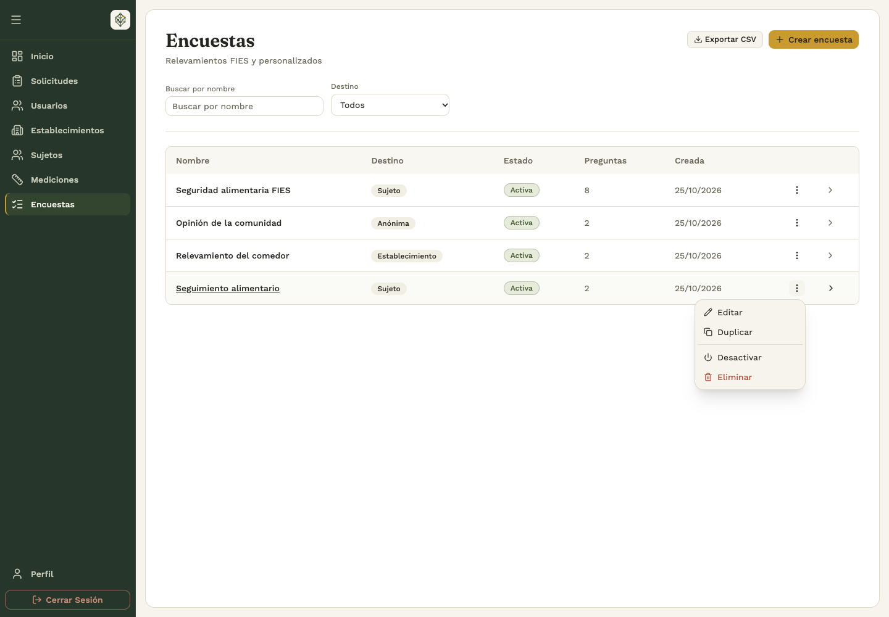
3.4 Editar después de recibir respuestas
El formulario muestra un aviso cuando la encuesta ya tiene respuestas. En ese estado no se puede cambiar el destino ni la obligatoriedad del número, eliminar preguntas, cambiar su tipo, volver obligatoria una pregunta opcional o agregar preguntas nuevas obligatorias. El panel también restringe la eliminación de opciones existentes.
Si alguien respondió mientras editabas y el guardado informa un conflicto, recargá la encuesta y revisá las restricciones actuales. No repitas el guardado de una configuración anterior sin revisar el mensaje.
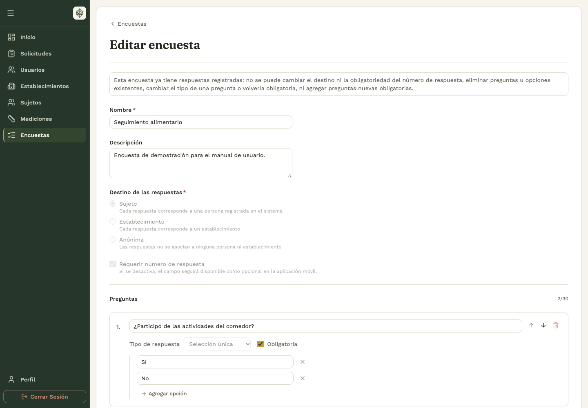
3.5 Elegir y responder desde la app
Antes de empezar: asegurate de tener cargado el sujeto o de haber elegido el establecimiento, según el destino del cuestionario.
- En Inicio, tocá Encuesta y elegí una encuesta disponible.
- Si es de sujetos, seleccioná la persona y comprobá su identidad.
- Si es de establecimientos, verificá el comedor del encabezado. Si es anónima, el formulario indica Anónima.
- Ingresá el Número de respuesta si corresponde. El rango admitido es de 1 a 999999.
- Contestá las preguntas. En selección única elegís una opción; en selección múltiple podés marcar varias.
- Tocá Guardar, corregí los campos señalados y comprobá el resultado.
- Revisá la sincronización desde Inicio o Historial.
Para un sujeto o establecimiento se admite una respuesta por encuesta. Al guardar, la app vuelve al listado para evitar otra carga para ese mismo destinatario. Las encuestas anónimas permiten realizar varias entrevistas: la app limpia las respuestas y propone el siguiente número.
El número de respuesta sirve para identificar el relevamiento, pero puede repetirse. No reemplaza la comprobación del destinatario.
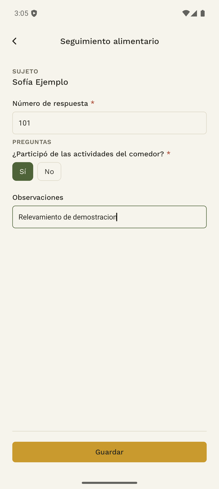
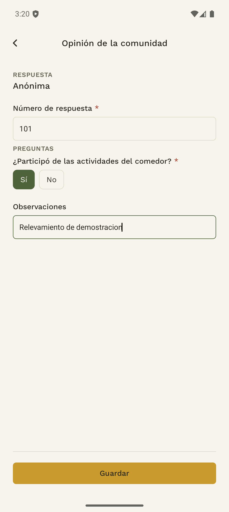
3.6 Responder sin conexión y resolver errores
Con conexión, abrí las encuestas que necesitás antes de ir a terreno. Sin internet, la app muestra Mostrando encuestas guardadas y depende de los formularios y destinatarios disponibles en el teléfono.
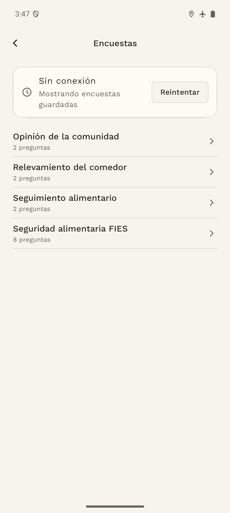
Las respuestas guardadas localmente se suben al recuperar conectividad. Si la encuesta fue desactivada antes de que la carga llegue al servidor, puede ser rechazada: revisá Historial y coordiná con quien administra el relevamiento.
Si una carga pendiente necesita completar el número, abrí Agregar número, ingresá un valor válido y usá Guardar y reenviar. Si el destinatario ya respondió, revisá la respuesta existente en lugar de crear otra.
3.7 Consultar y corregir una respuesta en la app
Desde Historial, entrá a las respuestas de encuestas y abrí el registro. El detalle permite revisar el cuestionario respondido y su número.
Cuando aparece Editar, corregí los campos necesarios y elegí Guardar cambios. Revisá el estado de la edición y la acción Reintentar edición si aparece. Una modificación pendiente todavía debe sincronizarse antes de considerarla compartida con el equipo.
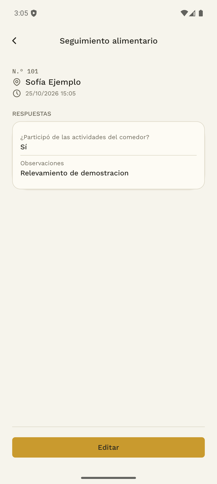
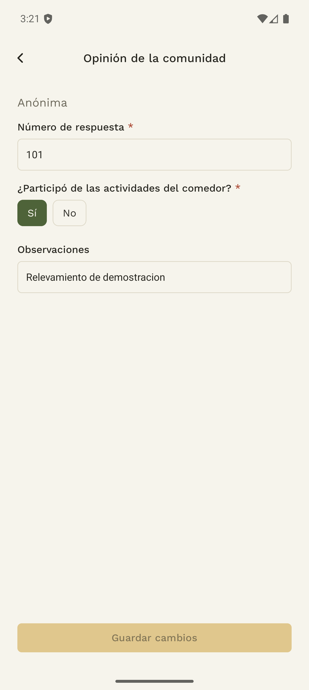
3.8 Consultar resultados y exportarlos
Dónde: backoffice → Encuestas → Ver respuestas.
- Revisá el destino de la encuesta y la cantidad de respuestas.
- Usá los filtros de fecha, ubicación, entidad, persona que completó y número de respuesta disponibles para ese relevamiento.
- Para números, elegí búsqueda exacta o por intervalo; el valor «desde» no puede superar al valor «hasta».
- Abrí una respuesta para consultar sus preguntas y respuestas completas.
- Usá Exportar para descargar las respuestas en un archivo Excel (
.xlsx). - Comprobá el archivo descargado y que corresponde a la selección filtrada.
La pantalla Inicio del backoffice reúne indicadores generales, como cantidad de respuestas y último relevamiento. La ausencia de resultados puede deberse a filtros, a que todavía no hubo respuestas o a que la app no terminó de sincronizar.
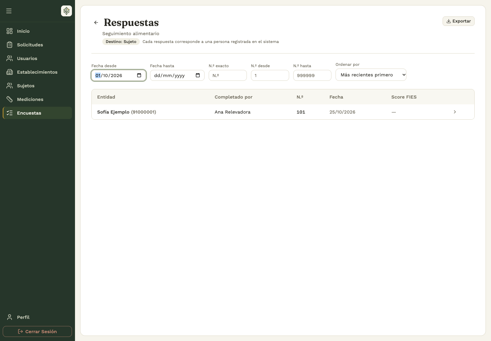
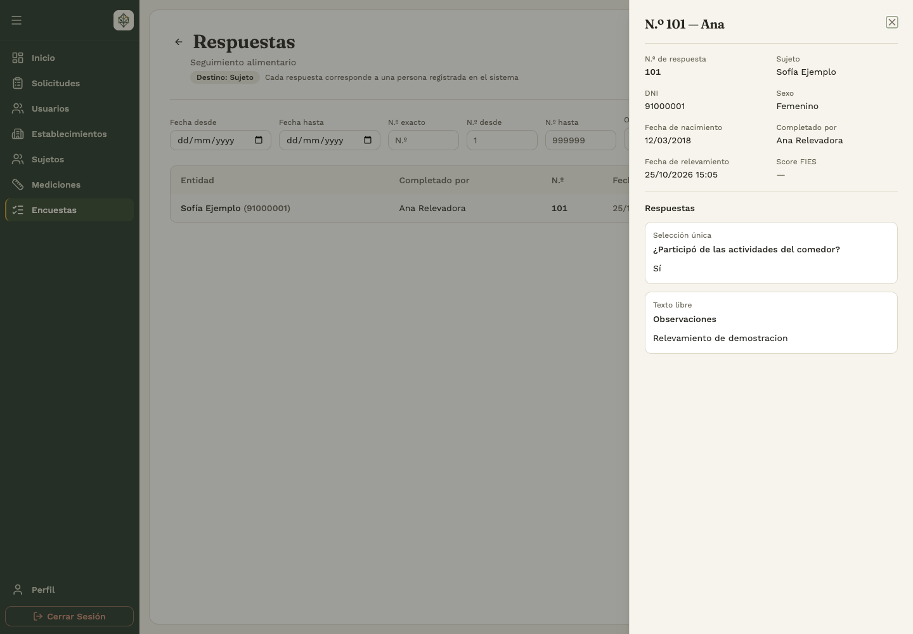
4. Nutrir
Recorrido completo
App o backoffice: registrar los alimentos recibidos → revisar el stock → registrar su salida o elegir una receta → comprobar el movimiento y el stock actualizado.
Trabajá siempre sobre el comedor correcto. Los ingresos, egresos y las confirmaciones de recetas requieren conexión; no tienen el mismo circuito de guardado offline que las mediciones.
4.1 Abrir Alimentos y consultar existencias
Dónde: app → Inicio → Alimentos.
La pantalla muestra el stock actual y los últimos movimientos del establecimiento elegido. Desde allí podés Registrar ingreso, Registrar con recibo, Registrar egreso, Ver todo el stock o abrir Recetas con el stock disponible.
En Stock, filtrá por categoría y elegí el orden que te resulte útil. Cada alimento muestra su unidad y cantidad. Sin alimentos disponibles indica que no hay existencias para esa consulta; si elegiste una categoría, probá quitar el filtro.
En el backoffice, abrí Establecimientos → comedor → Stock. La tabla permite consultar cantidades, categorías, unidades y última actualización, filtrar y descargar Exportar CSV.
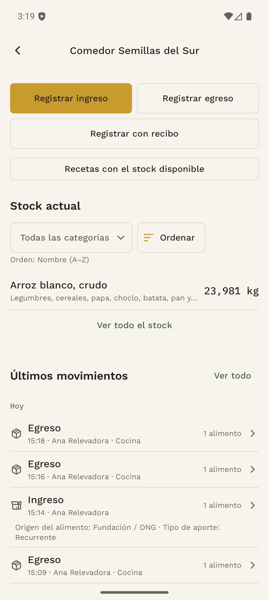
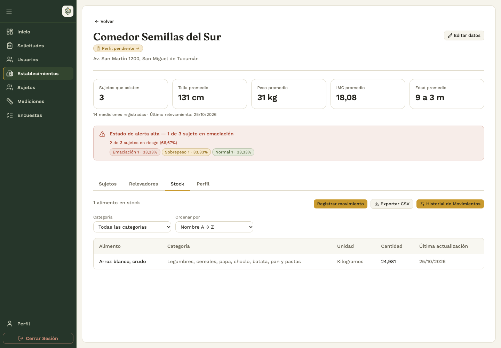
4.2 Registrar un ingreso manual desde la app
- En Alimentos, tocá Registrar ingreso.
- Confirmá el establecimiento y completá la Fecha de recepción. No puede ser futura.
- Indicá el Origen del alimento y si el aporte es Único o Recurrente.
- En Agregar alimento, buscá en el catálogo y seleccioná el alimento correcto.
- Ingresá la cantidad en la unidad que muestra la línea. Repetí el paso para cada alimento recibido.
- Agregá comentarios si corresponde y tocá Registrar ingreso.
- Comprobá el resultado en el stock y el historial.
El catálogo determina la unidad: kilogramos, litros o unidades. No conviertas una bolsa o una caja a «unidades» si el alimento está expresado en kilogramos; registrá la cantidad en la unidad indicada.
El formulario requiere al menos un alimento y cantidades positivas. Si falla la conexión al guardar, revisá el mensaje y el historial antes de iniciar un ingreso nuevo.
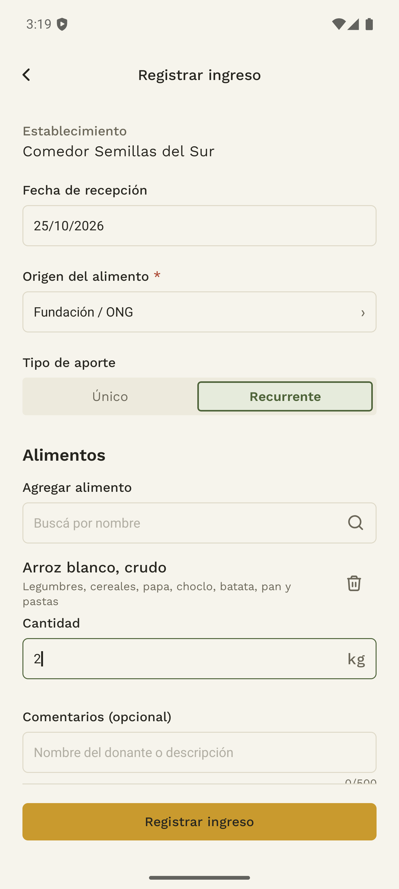
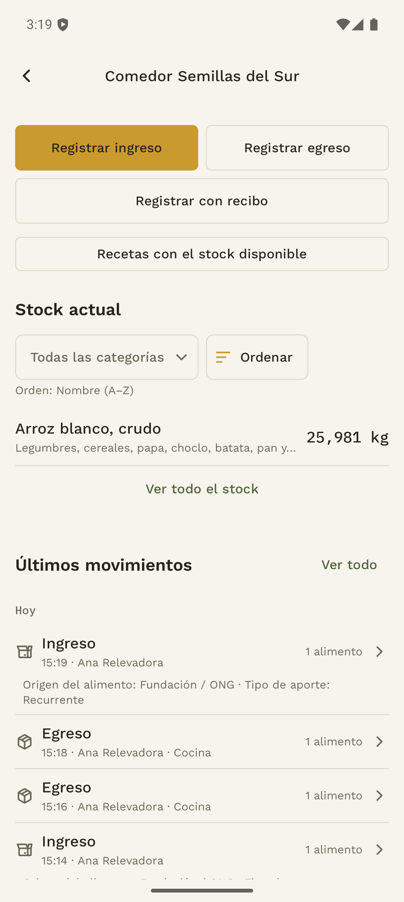
4.3 Registrar alimentos a partir de un recibo
Dónde: app → Alimentos → Registrar con recibo.
- Elegí o tomá una foto legible del recibo. Incluí el documento completo y evitá reflejos o texto cortado.
- Tocá Procesar recibo y esperá el análisis. Podés cancelar si necesitás volver.
- Revisá la fecha propuesta, el origen, el tipo de aporte y cada línea de alimento.
- Corregí la coincidencia del catálogo, la cantidad y la unidad cuando haga falta. El texto detectado del recibo se muestra como referencia.
- Marcá cada línea como revisada y agregá o quitá alimentos para que el registro coincida con lo recibido.
- Tocá Guardar ingreso y comprobá el movimiento registrado.
El análisis prepara una propuesta: no registra automáticamente el ingreso. La revisión es parte del trabajo. Si el análisis no está disponible, la opción Cargar manualmente con esta foto permite continuar la revisión manual cuando la pantalla la ofrece.
Limitación comprobada en esta edición: el análisis automático puede terminar en No se pudo completar. Reintentá con este mismo recibo por una incompatibilidad entre la app y el backend. Para continuar, elegí Cargar manualmente con esta foto, seleccioná los alimentos y completá las cantidades. Consultá al equipo antes de repetir el análisis indefinidamente.
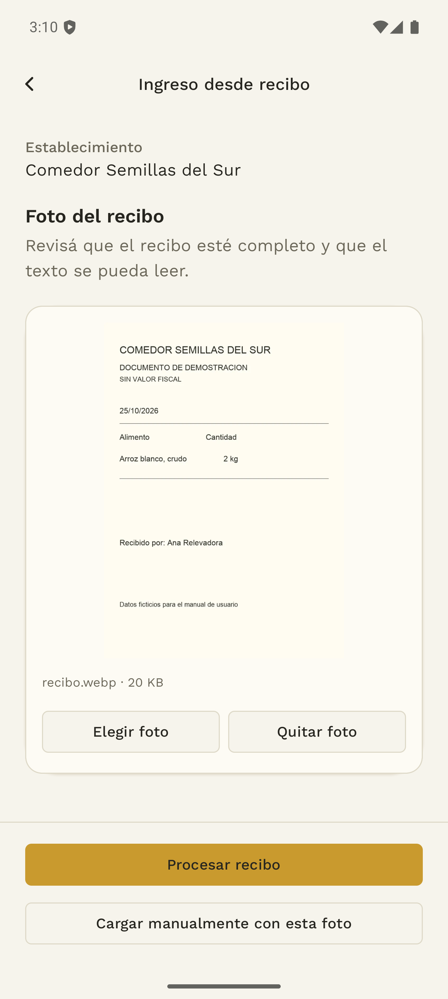
Si la imagen no es válida, resulta demasiado grande o no se puede procesar, elegí otra foto. Si falla el guardado, usá Reintentar guardado con ese mismo recibo después de revisar el estado. Descartar recibo elimina la preparación de esa carga; confirmalo solo si querés abandonar ese trabajo.
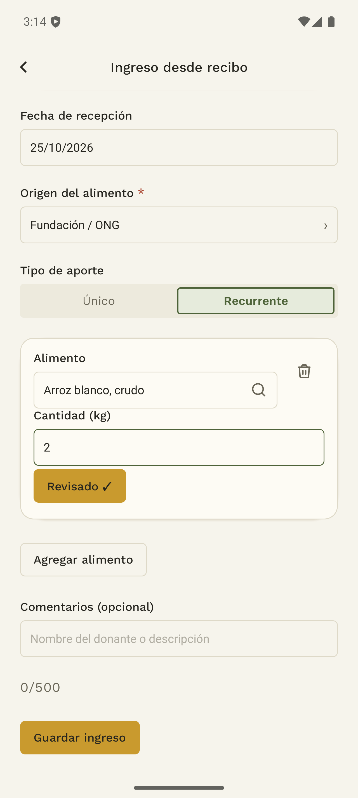
4.4 Registrar un egreso
Dónde: app → Alimentos → Registrar egreso.
- Comprobá el comedor y completá la Fecha del egreso.
- Indicá el Destino del egreso: entrega a familias, cocina, descarte u otro, según corresponda.
- Seleccioná los alimentos desde el stock disponible; podés filtrar por categoría.
- Ingresá las cantidades y agregá comentarios si hacen falta.
- Tocá Registrar egreso.
- Revisá el movimiento y el saldo restante en Stock.
No se puede retirar más de lo disponible. El stock puede cambiar mientras otra persona registra un movimiento: si el sistema informa existencias insuficientes, actualizá la consulta y ajustá las cantidades antes de volver a guardar.
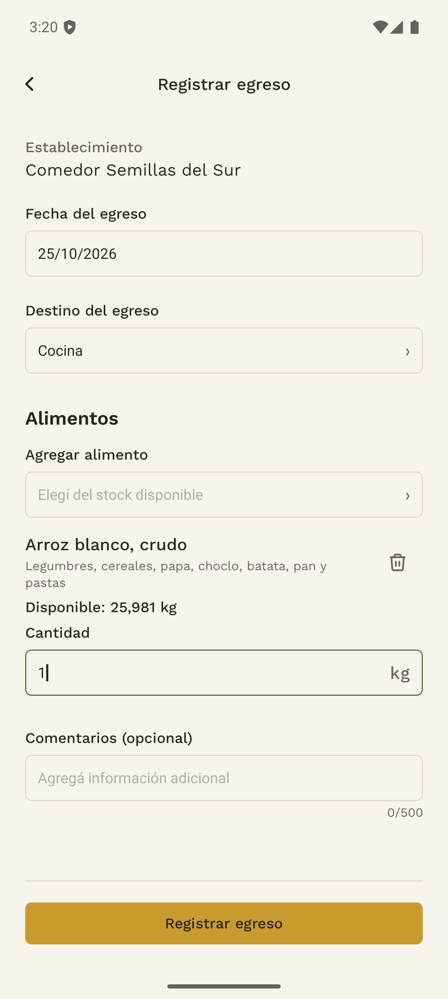
4.5 Registrar movimientos desde el backoffice
Quién: administrador o analista con acceso a las acciones correspondientes. Dónde: ficha del establecimiento → Stock → Registrar movimiento.
- Elegí si se trata de un ingreso o un egreso.
- Completá fecha, alimentos, cantidades y comentarios según el formulario.
- Para un egreso, elegí también su destino. Para un ingreso, indicá el origen y si el aporte es único o recurrente.
- Guardá y verificá Movimiento registrado.
- Usá Ver movimiento o Historial de Movimientos para comprobar el registro.
Si se informa que el movimiento ya estaba registrado, abrí el guardado y revisalo antes de volver a cargarlo.
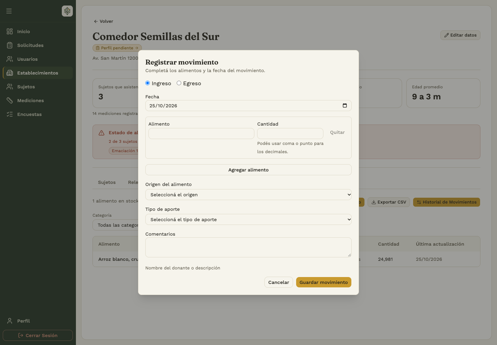
4.6 Consultar historial y detalle
En la app, abrí Alimentos → Ver todo en movimientos. En el backoffice, elegí Stock → Historial de Movimientos.
- Filtrá por dirección del movimiento, fechas, alimento y las opciones disponibles.
- Comprobá que la fecha inicial no sea posterior a la final.
- Abrí un ingreso o egreso para revisar fecha, responsable, comentarios, alimentos, cantidades y unidad.
- Si no encontrás un movimiento, quitá los filtros y comprobá el establecimiento.
No confundas Historial de tus cargas en la app con el historial completo de movimientos del comedor: pueden tener alcances diferentes.
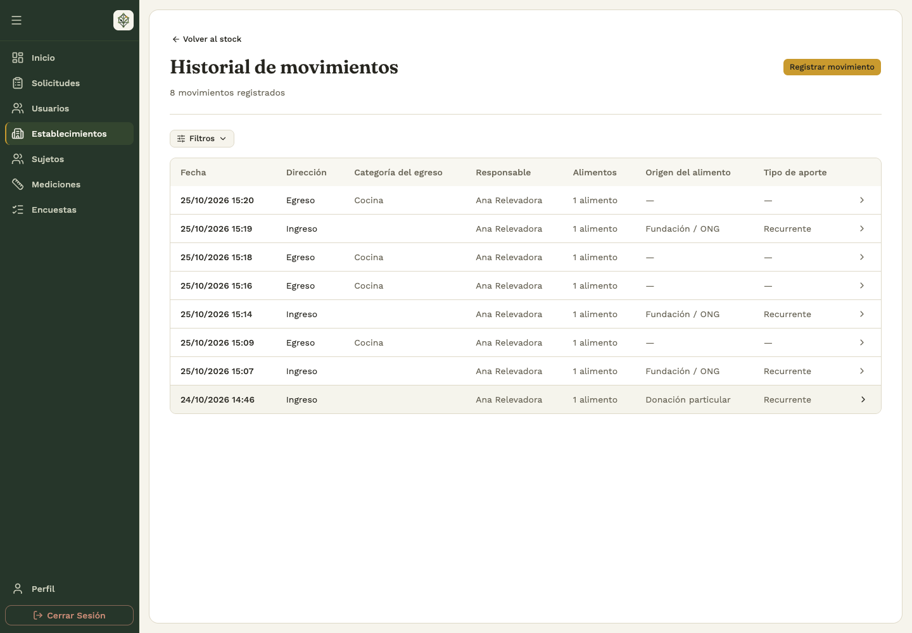
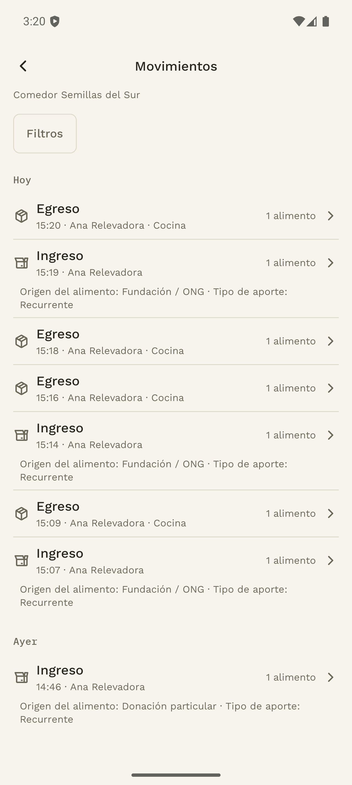
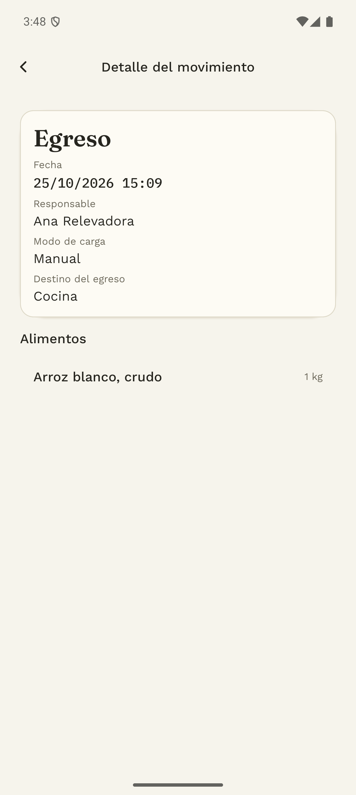
4.7 Solicitar propuestas de recetas
Dónde: app → Inicio → Recetas, o Alimentos → Recetas con el stock disponible.
- Elegí el comedor y verificá sus existencias.
- En Generar, completá ¿Cuántos chicos comen hoy? con un número entero positivo.
- Elegí el Tipo de comida: desayuno, almuerzo, merienda o cena.
- Tocá Buscar propuestas y esperá. El formulario informa que la preparación puede tardar unos minutos.
- Revisá las propuestas disponibles: nombre, porciones, ingredientes, cantidades, preparación y los indicadores y restricciones que se muestran.
Si no hay stock suficiente, el sistema no puede preparar una propuesta viable. Si la generación falla, revisá el mensaje y usá el reintento disponible. Una falta de conexión o un límite temporal no se resuelve creando repetidamente el mismo pedido.
Completar la ficha del establecimiento aporta contexto sobre la cocina y la comunidad. El formulario de recetas no pide inventar ingredientes que el comedor no tiene.
La propuesta puede advertir que no alcanza todos los objetivos. Abrí Ver preparación y nutrientes para revisar los pasos, indicadores y faltantes antes de decidir. El ejemplo de esta guía usa intencionalmente un stock limitado para mostrar ese aviso.
4.8 Elegir una receta y descontar sus ingredientes
- En una propuesta, tocá Elegir esta receta.
- Revisá el diálogo ¿Cocinar esta receta?, el nombre y la cantidad de chicos.
- Elegí Confirmar y registrar salida únicamente cuando quieras registrar ese consumo.
- Comprobá la receta elegida, el egreso generado y el nuevo stock.
La confirmación crea una salida de alimentos y descuenta los ingredientes. Solo se puede elegir una propuesta por pedido. Si el stock cambió y no alcanza, revisá las existencias antes de continuar.
Si no se conoce el resultado por una falla de conexión, usá Reintentar confirmación. Si cambiaste de comedor, volvé al establecimiento indicado por la confirmación pendiente. Evitá registrar además un egreso manual por los mismos ingredientes.
4.9 Volver a cocinar una receta anterior
- En Recetas → Historial, buscá una receta elegida y tocá Ver receta.
- En Volver a cocinar, ingresá la Cantidad de chicos de hoy.
- Tocá Ver cantidades para hoy para revisar los ingredientes ajustados.
- Elegí Cocinar esta receta, revisá la confirmación y registrá la salida.
- Comprobá el egreso y el stock actualizado.
La reutilización ajusta una receta existente y vuelve a validar las existencias actuales. Consultar el detalle o previsualizar cantidades todavía no registra un consumo.
4.10 Resolver problemas sin duplicar movimientos
| Situación | Acción recomendada en la aplicación |
|---|---|
| No hay establecimiento elegido | Volvé a Inicio y seleccioná el comedor. |
| Sin conexión | Recuperá conectividad antes de registrar ingresos, egresos o confirmar recetas. |
| Ya no tenés acceso | Pedí a un administrador que revise el vínculo con el comedor. |
| Alimento no disponible en catálogo | Revisá la selección y elegí una entrada válida. |
| Stock insuficiente | Actualizá la consulta y ajustá el egreso o la receta. |
| Recibo con propuesta incorrecta | Corregí las líneas manualmente antes de confirmar. |
| Resultado de guardado incierto | Revisá Historial y usá el reintento del mismo formulario. |
| Servicio de recetas o recibos no disponible | Conservá los datos y seguí la alternativa manual disponible para el ingreso. |
4.11 Recordatorios de actualización del stock
Android puede solicitar permiso para mostrar notificaciones después de iniciar sesión. Si lo permitís, podés recibir avisos cuando un establecimiento lleva tiempo sin registrar salidas.
Al abrir uno de esos avisos, la app selecciona el establecimiento indicado y abre su stock. Comprobá el comedor, revisá los últimos movimientos y registrá las salidas reales que correspondan. Abrir una notificación no crea un movimiento ni modifica las existencias.
Si no recibís avisos, podés consultar y actualizar la información desde Alimentos. La entrega de notificaciones no se verificó con el proveedor externo en esta edición.